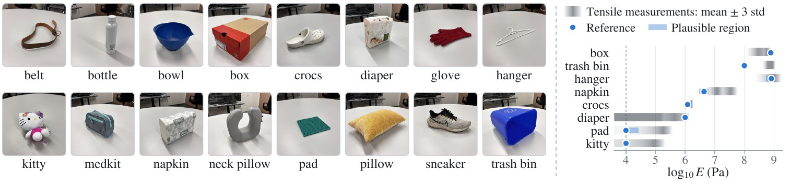

How an object deforms when it hits the ground reveals what it is made of. From a single real video of a drop, we estimate a deformable object’s density-normalized stiffness E/ρ, and its yield stress σY/ρ when the impact causes plastic deformation, with a feed-forward predictor trained only in simulation. Real videos carry no material labels, so such predictors are developed and validated on synthetic data alone. We show that synthetic validation ranks their geometric inputs in the wrong order. Material acts through 3D deformation, and tracklets lifted to 3D with estimated depth are indeed the most accurate input in simulation. However, on real drops they are the least accurate, and better depth does not repair them: the failure persists with simulator depth in training, LiDAR depth at test time, and exact depth on rendered replays of the real drops. Short 2D optical-flow tracklets do the opposite: they improve nothing in simulation, yet they transfer best. Material is therefore better read from what perception measures consistently in both domains than from what is most informative in simulation. Our predictor, PhysReader, reads the video and 2D tracklets and learns the lift to 3D in simulation by matching a teacher that sees exact 3D deformation. To measure transfer, we introduce PhysReader-Real: 16 everyday objects dropped five times each, with reference materials fit jointly to each object’s drops and checked against tensile tests. On PhysReader-Real, PhysReader is closer to the reference materials than every other input and baseline. The one exception is a per-scene optimizer started from PhysReader’s prediction, which ends slightly closer but takes 49 minutes per video instead of 12 seconds.
What a drop reveals, and what transfers. A predictor trained only in simulation estimates an object’s material from a video of its drop. Should it read 2D optical-flow tracklets (blue) or the same tracklets lifted to 3D with estimated depth (orange)? Lifting lowers the error slightly in simulation (left) but raises it sharply on real drops (right). Observed video: the drop at impact (earlier and later frames translucent), the 2D tracklets, and the 3D tracklets, rotated to show depth. Re-simulation: the drop re-simulated from the same initial state with the true material (simulation) or a reference material fit to the object’s drops (real), and with the materials predicted by PhysReader trained on 2D tracklets and by the same model trained on 3D tracklets. Color shows strain at impact (scales differ), and log E is log10 of Young’s modulus in Pa. Both predictions are close to the truth in simulation, but on the real drop the 3D one is far too soft. Error: averaged over all validation clips and real drops, in dex (log10 units); real drops are scored by their distance to the plausible region, the materials that reproduce the object’s drops. The 3D tracklets look noisier on the real drop, but even better depth does not close the gap (Sec. 5.3).
Overview of PhysReader. Training in simulation (left): ❶ a teacher encodes exact 3D deformation, available only in simulation, into a feature fT, from which material heads predict E/ρ and σY/ρ (loss ℓ against the GT material). ❷ PhysReader sees only inputs that real video also provides: the RGB clip (V-JEPA 2 with LoRA), 2D optical-flow tracklets, and temporal and scale context. It maps them to f̂T and is trained to match fT (loss d) and the material through a frozen copy of the teacher’s heads (ℓ; Eq. 4). Inference in real (right): PhysReader alone predicts the material, without depth. For evaluation, the prediction re-simulates the drop with density ρ and Poisson’s ratio ν, and we report the replay loss and the parameter distance to the plausible region of reference materials (Sec. 4).

PhysReader-Real. Top: the 16 objects; each clip cycles through the object's five drops. Bottom (Fig. 3 of the paper): the 16 objects, and for the 8 objects we cut specimens from, the reference stiffness fit jointly to the five drops (dot) and its plausible region (blue) against the measured stiffness of tensile specimens (gray).
Each real drop is re-simulated from the moment of release with three materials: the reference material fit to the object's five drops, the material predicted by PhysReader, and the material predicted by the same model trained on 3D tracklets. We show one drop of each object.
Before the release the object is shown held still. Strain is the magnitude of the Hencky strain, as in the overview figure. All three re-simulations of a drop use the same simulator, density, and Poisson's ratio; their initial states are fit to the video for each material. Yield stress is shown for drops that yield.
Each point is one predictor: its stiffness error (log10 E/ρ, dex) on synthetic validation and on the 80 real drops. Left is better in simulation, and lower is better on real drops. Arrows go from a model on 2D tracklets to the same model on 3D tracklets, and every arrow points to the upper left: tracklets lifted to 3D with estimated depth are the most accurate input in simulation, but on real drops they are the least accurate. Better depth does not repair them: with the simulator’s rendered depth in training, or with LiDAR depth or depth rendered from re-simulations of the real scenes at inference, the real error stays high. The rings, shown with the checkbox, are models on 3D tracklets with such other training or test depth.
Parameter distance to the plausible region on the 80 real drops against the time per video. Left is faster, and lower is more accurate. PhysReader takes about 12 seconds per video and is closer to the reference materials than any other baseline: the other feed-forward predictors, the per-scene optimizers with their own initialization, the VLM, and the coding agent are all less accurate. The one exception is a per-scene optimizer, PhysFlow, started from PhysReader’s prediction: it ends about 1% better, but takes 49 minutes per video instead of 12 seconds, about 250 times longer.